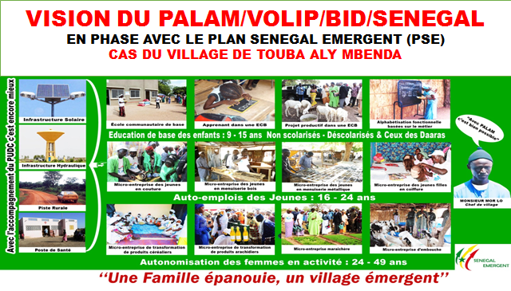

Au total, à travers la mise en œuvre du PALAM, le Sénégal entend engager un changement social à tous les niveaux et favoriser l'émergence d'une masse critique d'acteurs et surtout d'actrices locaux autonomes par le biais de la création de microentreprises rurales viables, éthiques, responsables et solidaires, contribuant significativement au développement économique du pays. A l'effet d'atteindre les objectifs poursuivis dans les délais, la conduite d'un tel Programme caractérisé par sa multisectorialité requiert un engagement fort et un style de management caractérisé par :
- L'engagement pour les grandes causes (autonomisation des femmes, autopromotion des groupes vulnérables)
- La flexibilité (coopération avec les partenaires institutionnels et d'exécution, les élus locaux et les bénéficiaires)
- La transparence (bonne circulation de l'information et communication institutionnelle)
- La rapidité d'intervention (planification)
- Le respect des fondamentaux de la Décentralisation et de la Déconcentration (plateformes régionales, comités de gestion villageois).
A cet égard, la BID, dans le cade l'élaboration d'outils de sensibilisation des expériences réussies, a choisi le PALAM Sénégal parmi les programmes à succès
« Des villages émergents, un pays émergent »